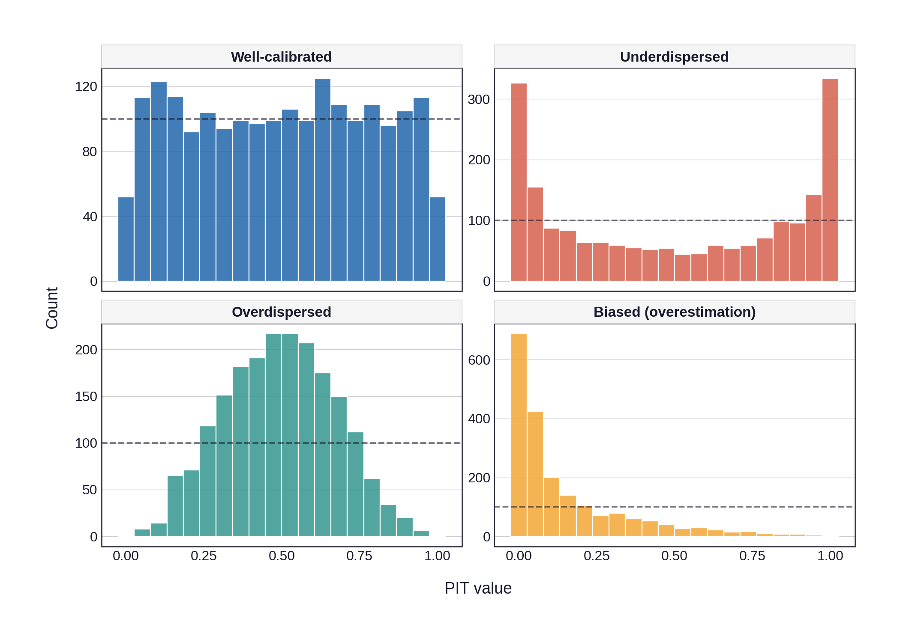

Code
np.random.seed(42)
n = 2000
# Well-calibrated: PIT ~ Uniform(0,1)
pit_calibrated = np.random.uniform(0, 1, n)
# Underdispersed: true variance > forecast variance => U-shape
# Observations drawn from N(0, 2^2), forecast assumes N(0, 1)
y_underdispersed = np.random.normal(0, 2, n)
pit_underdispersed = stats.norm.cdf(y_underdispersed, loc=0, scale=1)
# Overdispersed: true variance < forecast variance => hump-shape
# Observations drawn from N(0, 0.5^2), forecast assumes N(0, 1)
y_overdispersed = np.random.normal(0, 0.5, n)
pit_overdispersed = stats.norm.cdf(y_overdispersed, loc=0, scale=1)
# Biased (overestimation): forecast mean too high => mass near 1
# Observations from N(0, 1), forecast assumes N(1.5, 1)
y_biased = np.random.normal(0, 1, n)
pit_biased = stats.norm.cdf(y_biased, loc=1.5, scale=1)
df_pit = pd.DataFrame({
"PIT": np.concatenate([pit_calibrated, pit_underdispersed,
pit_overdispersed, pit_biased]),
"Scenario": (["Well-calibrated"] * n + ["Underdispersed"] * n +
["Overdispersed"] * n + ["Biased (overestimation)"] * n),
})
df_pit["Scenario"] = pd.Categorical(
df_pit["Scenario"],
categories=["Well-calibrated", "Underdispersed",
"Overdispersed", "Biased (overestimation)"],
ordered=True,
)
fill_colors = {
"Well-calibrated": ACADEMIC_COLORS["cobalt"],
"Underdispersed": ACADEMIC_COLORS["vermillion"],
"Overdispersed": ACADEMIC_COLORS["teal"],
"Biased (overestimation)": ACADEMIC_COLORS["amber"],
}
p = (
pn.ggplot(df_pit, pn.aes(x="PIT", fill="Scenario"))
+ pn.geom_histogram(bins=20, color="white", size=0.3, alpha=0.85)
+ pn.geom_hline(yintercept=n / 20, linetype="dashed",
color=ACADEMIC_COLORS["ink"], size=0.5, alpha=0.6)
+ pn.facet_wrap("~Scenario", ncol=2, scales="free_y")
+ pn.scale_fill_manual(values=fill_colors)
+ pn.labs(x="PIT value", y="Count")
+ theme_academic(base_size=9, grid="y")
+ pn.theme(
figure_size=(7, 5),
legend_position="none",
strip_text=element_text(size=8, face="bold"),
)
)
p